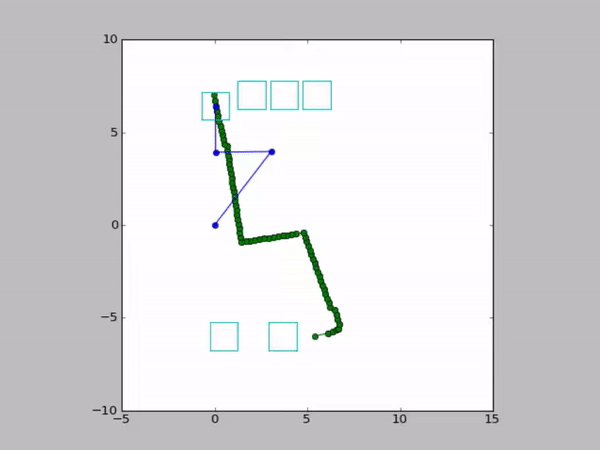

Your browser doesn't support the features required by impress.js, so you are presented with a simplified version of this presentation.
For the best experience please use the latest Chrome, Safari or Firefox browser.
L5: Basic Planning, Dynamics, and Control
Hao Su
Winter, 2023
Agenda
click to jump to the section.
Concepts of Motion Planning
Configuration Space
- Configuration space (\(\cal{C}\)-space) is a subset of \(\bb{R}^n\) containing all possible states of the system(state space in RL).
- \(\cal{C}_{free}\subseteq \cal{C}\) contains all valid states.
- \(\cal{C}_{obs}\subseteq \cal{C}\) represents obstacles.
- Examples:
- All valid poses of a robot.
- All valid joint values of a robot.
- ...
Motion Planning
-
Problem:
- Given a configuration space \(\cal{C}_{free}\)
-
Given start state \(q_{start}\)and goal state \(q_{goal}\) in \(\cal{C}_{free}\)
-
Calculate a sequence of actions that leads from start to goal
-
Challenge:
-
Need to avoid obstacles
-
Long planning horizon
-
High-dimensional planning space
Motion Planning
LaValle, Steven M. Planning algorithms. Cambridge university press, 2006.
Examples

Examples

- Ratliff N, Zucker M, Bagnell J A, et al. CHOMP: Gradient optimization techniques for efficient motion planning, ICRA 2009
- Schulman, John, et al. Finding Locally Optimal, Collision-Free Trajectories with Sequential Convex Optimization, RSS 2013
Sample-based Algorithm
- The key idea is to explore a smaller subset of possibilities randomly without exhaustively exploring all possibilities.
-
Pros:
-
Probabilistically complete
-
Solve the problem after knowing partial of \(\cal{C}_{free}\)
-
Apply easily to high-dimensional \(\cal{C}\)-space
-
Cons:
-
Requires to find path between two close points
-
Does not work well when the connection of \(\cal{C}_{free}\) is bad
-
Never optimal
Probabilistic Roadmap Method (PRM)
Probabilistic Roadmap(PRM)
- The algorithm contains two stages:
- Map construction phase
- Randomly sample states in \(\cal{C}_{free}\)
- Connect every sampled state to its neighbors
- Connect the start and goal state to the graph
- Query phase
- Run path finding algorithms like Dijkstra
Kavraki, Lydia E., et al. "Probabilistic roadmaps for path planning in high-dimensional configuration spaces." IEEE transactions on Robotics and Automation 12.4 (1996): 566-580.
Rejection Sampling
-
Aim to sample uniformly in \(\cal{C}_{free}\).
-
Method
- Sample uniformly over \(\cal{C}\).
- Reject the sample not in the feasible area.
Pipeline

Challenges
-
Connect neighboring points:
- In general it requires solving dynamics
- Collision checking:
- It takes a lot of time to check if the edges are in the configuration space.
Example
PRM generates a graph \(G=(V,E)\) such that every edge is in the configuration space without colliding with obstacles.

Example
Find the path from start state \(q_{start}\) to goal state \(q_{goal}\)
Limitations: Narrow Passages
It is unlikely to sample the points in the narrow bridge

Gaussian Sampling
- Generate one sample \(q_1\) uniformly in the configuration space
- Generate another sample \(q_2\) from a Gaussian distribution \(\cal{N}(q_1, \sigma^2)\)
- If \(q_1\in\cal{C}_{free}\) and \(q_2\neq \cal{C}_{free}\) then add \(q_1\)
Read by Yourself
Bridge Sampling
- Generate one sample \(q_1\) uniformly in the configuration space
- Generate another sample \(q_2\) from a Gaussian distribution \(\cal{N}(q_1, \sigma^2)\)
- \(q_3=\frac{q_1+q_2}{2}\)
- If \(q_1\), \(q_2\) are not in \(\cal{C}_{free}\) then add \(q_3\)
Read by Yourself
Rapidly-exploring Random Trees (RRT)
Rapidly-exploring Random Tree(RRT)
- RRT grows a tree rooted at the start state by using random samples from configuration space.
- As each sample is drawn, a connection is attempted between it and the nearest state in the tree. If the connection is in the configuration space, this results in a new state in the tree.
Extend Operation

Pipeline

Examples

Challenges
- Find nearest neighbor in the tree
- We need to support online quick query
- Examples: KD Trees
- Need to choose a good \(\epsilon\) to expand the tree efficiently
- Large \(\epsilon\): hard to generate new samples
- Small \(\epsilon\): too many samples in the tree
RRT-Connect
- Grow two trees starting from \(q_{start}\) and \(q_{start}\) respectively instead of just one.
- Grow the trees towards each other rather than random configurations
- Use stronger greediness by growing the tree with multiple epsilon steps instead of a single one.
Kuffner, James J., and Steven M. LaValle. "RRT-connect: An efficient approach to single-query path planning." Proceedings 2000 ICRA. Millennium Conference. IEEE International Conference on Robotics and Automation. Symposia Proceedings (Cat. No. 00CH37065). Vol. 2. IEEE, 2000.
Pseudo Code
Concepts of Dynamics
Dynamics Example: Grasp
- Consider the right grasp problem
-
Assume that we are grasping this box using two arms
-
We apply torques at each joint through the installed motors
-
These torques will be passed to the tips of the fingers.
-
...
Q1: How to compute force at the tips from the torques at joints?
Q2: To move the box with a certain acceleration, what is torque at joints?
Dynamics Example: Grasp
- Parameterization
- \(\theta \in\bb{R}^n\): vector of joint variables
- \(\tau \in\bb{R}^n\): vector of joint forces/torques
- Task
-
Forward dynamics: Determine acceleration \(\ddot{\theta}\) given the state \((\theta, \dot{\theta})\) and the joint forces/torques
\[\ddot{\theta}=\rm{FD}(\tau; \theta, \dot{\theta})\]
-
Inverse dynamics: Finding torques/forces given state \(\theta, \dot{\theta}\) and desired acceleration \(\ddot{\theta}\)
\[
\tau=\rm{ID}(\ddot{\theta}; \theta, \dot{\theta})
\]
Manipulator Equation
\[
\tau=\mv{M}^b(\theta)\ddot{\theta}+C^b(\theta,\dot{\theta})\dot{\theta}+g^b(\theta)
\]
- Essentially, $\mv{f}=m\mv{a}$
- We defer the derivation to the end of the quarter
- Equations for a simple arm

- Equations for PUMA 560 Arm

Concepts of Control
Plan versus Control
- Suppose we have a robot, how do we use it to move objects?

- Motion planning algorithms can generate a trajectory (position, velocity, and acceleration) of the robot.
- Now we need to know how to control the robot to follow such a trajectory.
Control
- Let us look at what we have
- A desired trajectory to follow: $(q_{d}, \dot{q}_d, \ddot{q}_d)$
- Forward dynamics $\ddot{q}=\rm{FD}(\mv{F}; q, \dot{q})$
- Inverse dynamics $\mv{F}=\rm{ID}(\ddot{q}; q, \dot{q})$
- Ideally, we just use inverse dynamics to compute $\ddot{q}$ at every moment to match $\ddot{q}_d$, and we are done!
- However, the real world is not perfect. There will be many sources of error, and error accumulates if only acceleration is matched.
- We use control to deal with delay, overshoot, or steady-state error, and ensure stability.
\[
e=q-q_d\tag{steady-state error}
\]
PID Controller
Feedforward and Feedback Control
- We need some force to match $\ddot{q}_d$. This component is called the feed-forward component, which comes from $\rm{ID}(\cdot)$:
\[
\mv{F}_{ff}=\rm{ID}(\ddot{q}_d; q, \dot{q})
\]
- We also need some additional force to correct the steady-state error, which is called the feedback component.
- We assume two matrices $K_v, K_p \in\bb{S}^+$ which are tunable parameters, and use a linear form to construct the feedback component as
\[
\mv{F}_{fb}=M(q)(-K_v\dot{e}-K_p e)
\]
where $M(q)$ is the inertia of the system.
Computed Torque Control Law
- Let us apply the previous control law to our single-arm robot derived last lecture.
- Inverse dynamics equation:
\[
\tau=M(\theta)\ddot{\theta}+C(\theta,\dot{\theta})\dot{\theta}+g(\theta)
\]
-
Therefore,
\[
\aligned{
\tau_{ff}&=M(\theta)\ddot{\theta}_d+C(\theta,\dot{\theta})\dot{\theta}+g(\theta)\\
\tau_{fb}&=M(\theta)(-K_v\dot{e}-K_p e)
}
\]
where $K_v, K_p \in\bb{S}^+$ are constant matrices ($\bb{S}^+$: positive-semidefinite matrices cone).
- Combine them together, and the computed torque control law is:
\[
\tau=
M(\theta)(\ddot{\theta}_d-K_v\dot{e}-K_p e)+C(\theta,\dot{\theta})\dot{\theta}+g(\theta)
\tag{computed torque control}
\]
Convergence Analysis
- We will control the system by the torque
\[
\tau=M(\theta)(\ddot{\theta}_d-K_v\dot{e}-K_p e)+C(\theta,\dot{\theta})\dot{\theta}+g(\theta)\tag{1}
\]
- However, inverse dynamics equation tells us that the acceleration from $\tau$ is
\[
\tau=M(\theta)\ddot{\theta}+C(\theta,\dot{\theta})\dot{\theta}+g(\theta)\tag{2}
\]
- Subtracting (2) from (1) and cancel $M(\theta)$, we get the error equation:
\[
\ddot{e}+K_v\dot{e}+K_p e=0
\]
Convergence Analysis
\[
\ddot{e}+K_v\dot{e}+K_p e=0
\]
- Because $K_v, K_p\in\bb{S}^+$, by the theory of ODE, $e(t)=\mathcal{O}(e^{\alpha t})$, $\alpha\le 0$.
- We say that the computed torque control law has exponential convergence rate.
- Sometimes, we do not have the inverse dynamics equation of the system, but we still hope the controller to work
(Isn't that the advertisement of model-free reinforcement learning?)
PD Control
- The PD control law has the form:
\[
\tau=-K_v\dot{e}-K_p e \tag{PD control}
\]
where $K_v, K_p\in\bb{S}^+$ and $e=\theta-\theta_d$.
- Does not compute inverse dynamics at all.
- No theoretical guarantee in general.
- Not practical in general
- $e$ may converge; however, it usually does not converge to $0$.
PID Control
- PID Control law has the form
\[
\tau=-K_v\dot{e}-K_p e-K_i \int_0^t e(t)\d{t} \tag{PID control}
\]
where $K_v, K_p, K_i\in\bb{S}^+$ and $e=\theta-\theta_d$.
- $K_i$ term: accumulate errors over all past time steps.
- Inherits all the issues of PD, except
- When $e$ converges, it usually converges to $0$.
- Widely used in practice.
Augmented PID Control
- Augmented PID control law has the form:
\[
\tau=\rm{ID}(\ddot{\theta}_d)-K_v\dot{e}-K_p e
\]
- Recall the computed torque control law:
\[
\tau=\rm{ID}(\ddot{\theta_d})-M(\theta)K_v\dot{e}-M(\theta)K_p e
\]
- Compared with the computed torque control law, $K$'s may be harder to tune.
- Does result in exponential convergence for $K_v, K_p\in\bb{S}^+$
Tuning PID
Effects of increasing a parameter independently
| Parameter |
Rise time | Overshoot
|
Settling time
|
Steady-state error
|
Stability
|

|
Decrease
|
Increase
|
Small change
|
Decrease
|
Degrade
|

|
Decrease
|
Increase
|
Increase
|
Eliminate
|
Degrade
|

|
Minor change
|
Decrease
|
Decrease
|
No effect in theory
|
Improve if small
|
Kiam Heong Ang; Chong, G.; Yun Li (2005). "PID control system analysis, design, and technology". IEEE Transactions on Control Systems Technology. 13 (4): 559–576.
Jinghua Zhong (Spring 2006). "PID Controller Tuning: A Short Tutorial" (PDF). Archived from the original on 2015-04-21. Retrieved 2011-04-04.